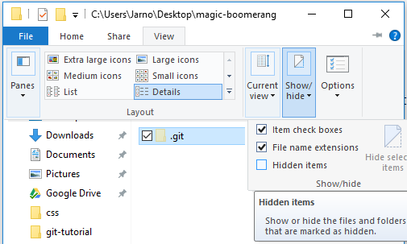

Git Tutorial - 3. Repository Initialization
Run Git Bash

Navigate to Desktop & Create a Project Directory
- You may skip the directory creation via the Git Bash terminal window, just make sure you are in the right directory, before adding a directory to revision control later on.
- pwd - shows current location in the file system.
- cd Desktop - changes location from current directory "C:\Users\YourUserName" to subdirectory "Desktop".
- mkdir magic-boomerang - creates a new directory named "magic-boomerang" on the current directory (Desktop).
- cd magic-boomerang - changes location from current directory "C:\Users\YourUserName\Desktop" to subdirectory "magic-boomerang".
Set Username and Email (one time config for every OS user account)
- The config file is saved as .gitconfig -file at user's home directory and its contents are as follows:
-
[user] name = Jarno Poikonen email = reactionstack@gmail.com [core] autocrlf = true (this was set by installation wizard earlier)
Git Command: git help
- Double dash --, denotes an option, in verbose form, usually a whole word.
- Single dash -, denotes an option, in shorthand form, usually a single letter.
- Single dash between words without any bounding spaces is just a literal dash between words.
- Therefore git --help, means that the git.exe accepts a string input of "--help", which git interprets as a command to print helpful text to the standard output (terminal/command prompt/what-have-you).
- Text within angle brackets <text> denotes a mandatory string input argument.
- Text within square brackets [text] denotes an optional string input argument.
- Vertical bar |, stands for "or", for example: git [-p | --paginate | -P | --no-pager] means that git accepts either --paginate or --no-pager options or their shorthanded forms of -p or -P.
- Pretty much everything else is to be taken literally.
- When in doubt, just google it.
- git, brings out the help text as shown on the left.
- git --help, brings out the help text as shown on the left.
- git help, brings out the help text as shown on the left.
- git help help, brings out the help manual in your browser.
- git help init, brings out the init manual in your browser.
- git help -h, shows the available options for help in the standard output.
- git init -h, shows the available options for init in the standard output.
- Remember git help <command> and git <command> -h, they are very useful.
For those unfamiliar with command line API description syntax characters:
Some Examples:
Git Command: git init
- By first calling git help, git shows a list of the most common commands, where one is named as init with a description next to it saying: "Create an empty Git repository or reinitialize an existing one".
- Then one can call git init -h to view init's shortened documentation and if necessary even call git help init to view the init's full documentation in browser.
- init requires no parameters, so one can just call git init.
- Now the directory and its future subdirectories and their files will all be under revision control of git.
- By enabling view hidden items you can verify git actually created its repository files into a directory named .git.
- This directory is the git repository, which will serve as the local database for all the working directory snapshots of magic-boomerang.
- 
- Alternatively one can call ls -a in git bash to view all the files in the current directory including hidden files like the .git directory. ls is a unix command that lists common files in the current path to standard output, the -a option stands for "all" which tells the ls to view the hidden files as well.

- Since the magic-boomerang directory is now under revision control of git, git bash shows the branch name of the repository (master), indicating that the user of the git bash is now in a directory that has a repository, a repository whose current branch is master.